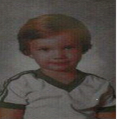

About Me
Don't let this distract you from the the fact that in 1966, Al Bundy scored four touchdowns in a single game while playing for the Polk High School Panthers in the 1966 city championship game versus Andrew Johnson High School, including the game-winning touchdown in the final seconds against his old nemesis, Bubba "Spare Tire" Dixon
Jelly-o cheesecake dessert fruitcake ice cream brownie liquorice soufflé. Caramels biscuit gummi bears tiramisu chupa chups. Croissant macaroon cotton candy cake pudding.
Connect with Me